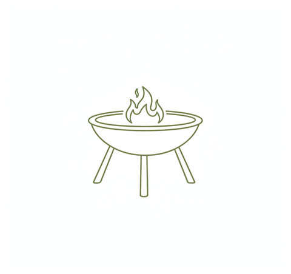
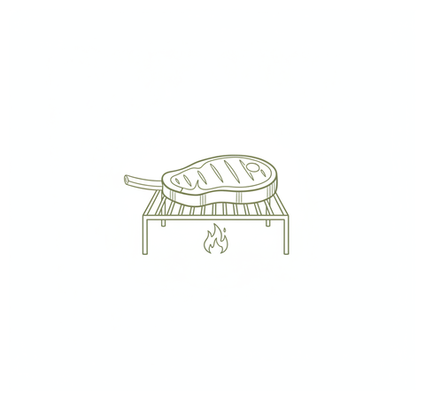
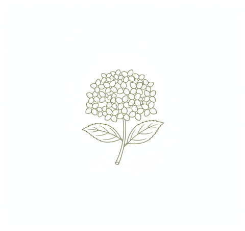

Générés par Gemini — à valider
Voici les pictos générés par Gemini (avec ta couronne d'olivier comme référence de style), animés en douceur. Dis-moi si tu les valides — et si tu veux le trait plus foncé pour mieux coller à tes autres icônes.



Je peux aussi en générer d'autres (alliances, oliviers, soleil, jeep…) dans le même style, et même tenter de petites vidéos animées.